|
4-3-3
|
Spain | 0 | - | 0 | Cabo Verde |
4-1-4-1
|
| HT 0-0 | ||||||
|
FIFA World CupMonday 15 June 2026
|
||||||
- Venue
- Atlanta Stadium
- Attendance
- 67,640
- Referee
- Adham Mohammad Tumah Makhadmeh
- 2
Substitution71'
Fabián Ruiz
Mikel Merino
Gavi
Lamine Yamal
Substitution81'
Ferran Torres
Dani Olmo
Substitution87'
Rodri
Nico Williams
Yellow card90+3'
Pedri
Whistle45+5'
45+5'
Yellow card16'
Sidny Cabral
- 3
Substitution61'
Jovane Cabral
Willy Semedo
Laros Duarte
Deroy Duarte
Dailon Livramento
Nuno da Costa
Substitution76'
Sidny Cabral
João Paulo
Substitution79'
Jamiro Monteiro
Telmo Arcanjo
Spain | |
|---|---|
Goalkeeper | |
| 23 | Unai Simón |
Defender | |
| 5 | Marcos Llorente |
| 14 | Aymeric Laporte |
| 22 | Pau Cubarsí |
| 24 | Marc Cucurella |
Midfielder | |
| 8 | Fabián Ruiz 71' |
| 16 | Rodri 87' |
| 20 | Pedri 90+3' |
Forward | |
| 7 | Ferran Torres 81' |
| 9 | Gavi 71' |
| 21 | Mikel Oyarzabal |
Substitutes | |
| 6 | Mikel Merino 71' |
| 10 | Dani Olmo 81' |
| 17 | Nico Williams 87' |
| 19 | Lamine Yamal 71' |
Cabo Verde | |
Goalkeeper | |
| 1 | Vozinha |
Defender | |
| 3 | Diney Borges |
| 4 | Pico Lopes |
| 13 | Sidny Cabral 16'76' |
| 22 | Steven Moreira |
Midfielder | |
| 6 | Kevin Pina |
| 7 | Jovane Cabral 61' |
| 10 | Jamiro Monteiro 79' |
| 15 | Laros Duarte 61' |
| 20 | Ryan Mendes |
Forward | |
| 19 | Dailon Livramento 61' |
Substitutes | |
| 8 | João Paulo 76' |
| 14 | Deroy Duarte 61' |
| 17 | Willy Semedo 61' |
| 18 | Telmo Arcanjo 79' |
| 21 | Nuno da Costa 61' |


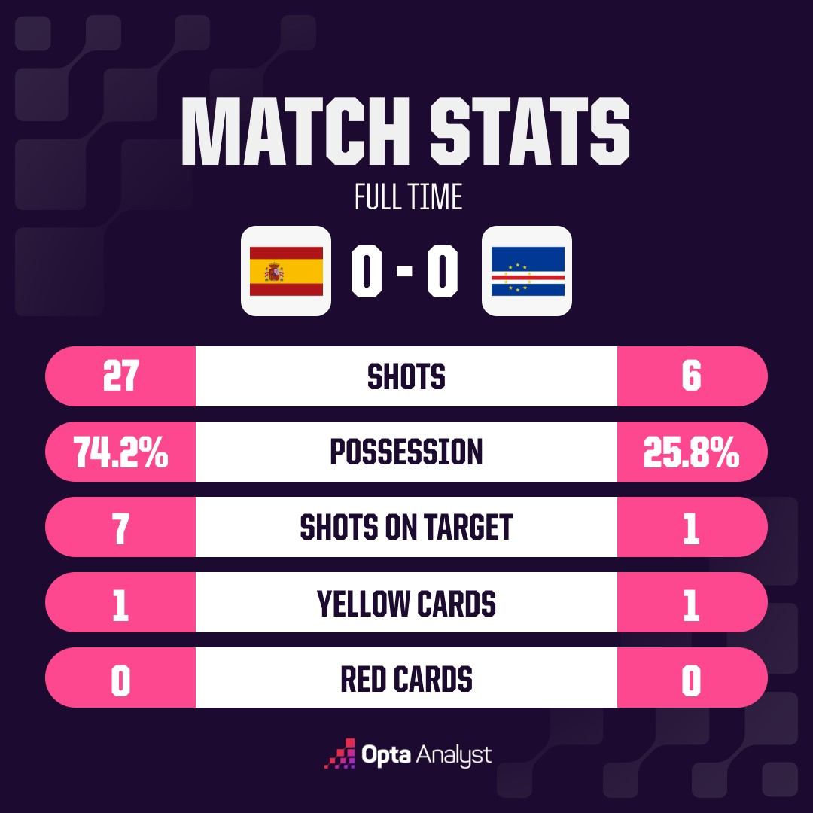
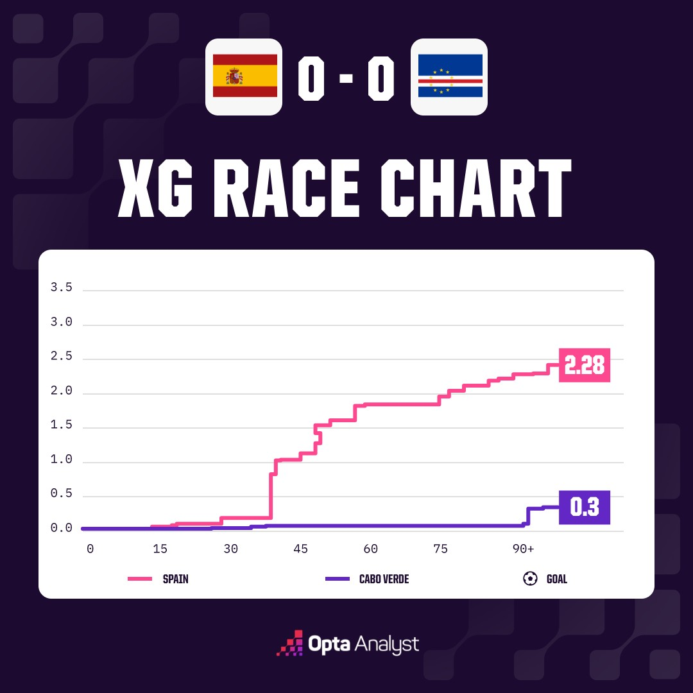
97'
Spain have failed to win in their last 4 games in the FIFA World Cup, their last joint longest winless streak was from 25th June 1982 to 1st June 1986.
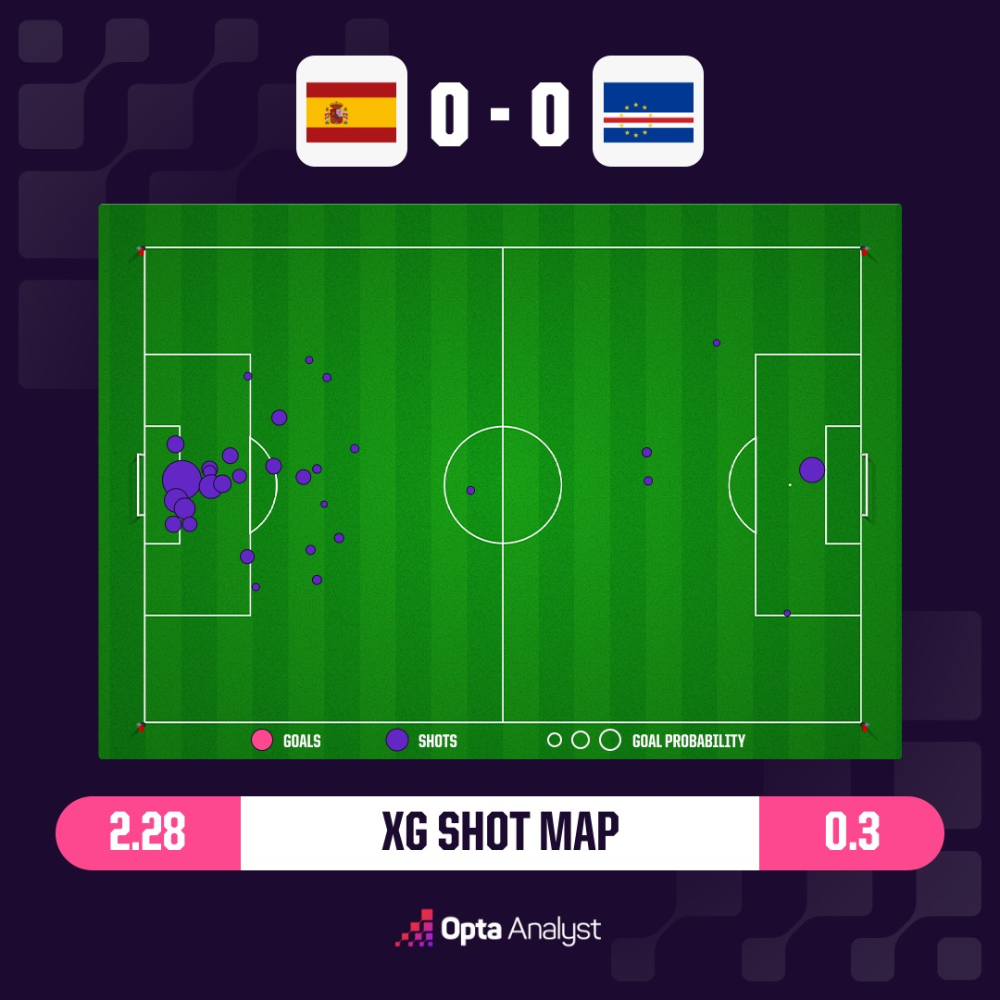
90+6'
That's it! The referee blows the whistle and we have reached full-time. The final score at Atlanta Stadium is Spain 0-0 Cabo Verde.
90+5'
MISS! The score remains 0-0, with Cabo Verde relieved after Spain’s Mikel Oyarzabal goes for goal but sends their attempt off target. Not one to write home about, that one.
90+5'
Can Cabo Verde survive here? They will have some defending to do after the ball is turned behind for a corner kick. Will Spain take this opportunity and grab the goal they have been pushing for?
90+5'
MISS! The score remains 0-0, with Cabo Verde relieved after Spain’s Lamine Yamal goes for goal but sends their attempt off target. Not one to write home about, that one.
90+4'
MISS! The score remains 0-0, with Spain relieved after Cabo Verde’s Ryan Mendes goes for goal but sends their attempt off target. Not one to write home about, that one.
90+3'
Yellow card! Pedri will have to be careful from now on after they are cautioned.
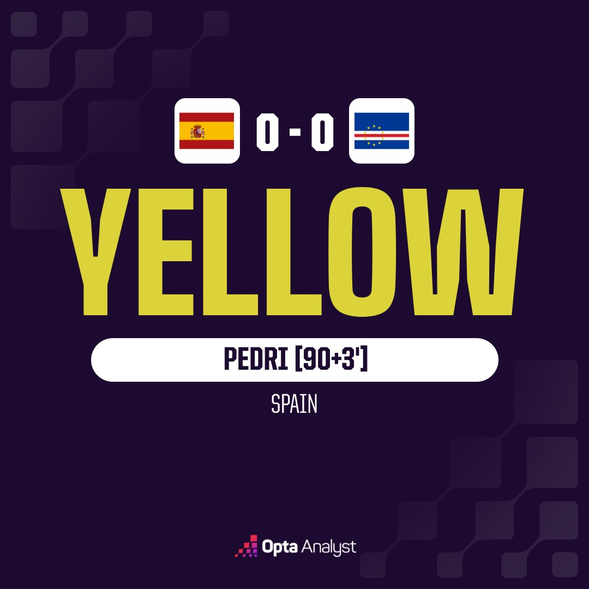
90+3'
A rash challenge from Pedri, who sends Nuno da Costa tumbling, giving Cabo Verde a free-kick. It is not in a threatening position, but it gives them a chance to get back on the ball.
90+1'
A chance now for Spain to get a good delivery into the box, after the ball is diverted behind for a corner. Spain have been pushing for what would be a key goal, but Cabo Verde have stood firm so far.
90+1'
Plenty of the ball in the last quarter-of-an-hour of this match for Spain, but still Cabo Verde stand firm, despite having had only 20.37% of the ball in that period. Can Spain make their possessional dominance count?
90+1'
MISSED! That is really poor from Diney Borges, who fails to convert from a golden opportunity, with the goal gaping. Will Cabo Verde pay for their profligacy, or can they put that miss behind them?
90+1'
CORNER! The pressure is building for Cabo Verde as they win a set-piece after Kevin Pina's attempt is blocked by Dani Olmo and diverted out of play.
88'
Mikel Oyarzabal's effort is deflected out for a corner. Can Spain make anything of this set-piece?
87'
Rodri’s match is over as Spain decide to make a substitution. Nico Williams enters the field in what looks like a tactical change.
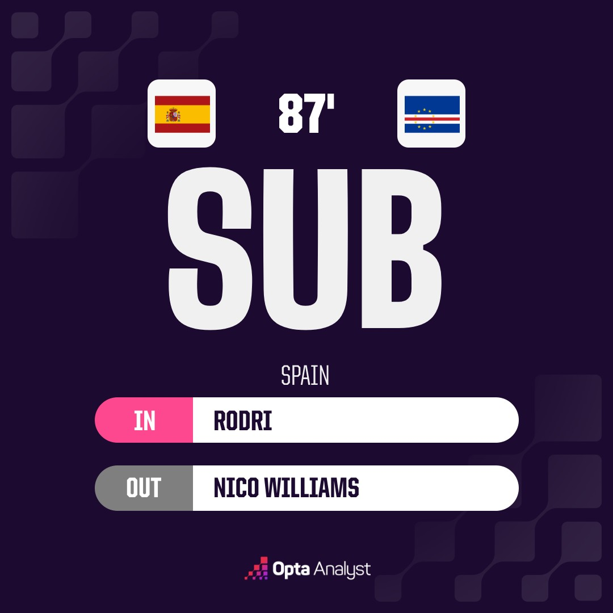
85'
MISS! The score remains 0-0, with Cabo Verde relieved after Spain’s Rodri goes for goal but sends their attempt off target. Not one to write home about, that one.
83'
Lamine Yamal goes in on João Paulo and concedes a foul. The free-kick is not in a particularly dangerous area from Spain’s viewpoint, though.
83'
CLOSE! Marc Cucurella gets into a decent shooting position inside the Cabo Verde area, and manages to find space to get an effort off. However, Vozinha is equal to it.
81'
OVERTURNED! VAR has decided to intervene here, and after that comprehensive check, the referee’s decision has been overturned.
81'
This decision may not stand, as it is going to VAR. The referee has stopped the play while his video assistant reviews the incident.
81'
A substitution for Spain sees Ferran Torres replaced by Dani Olmo. There does not appear to be any obvious sign of an injury, so that is a tactical switch.
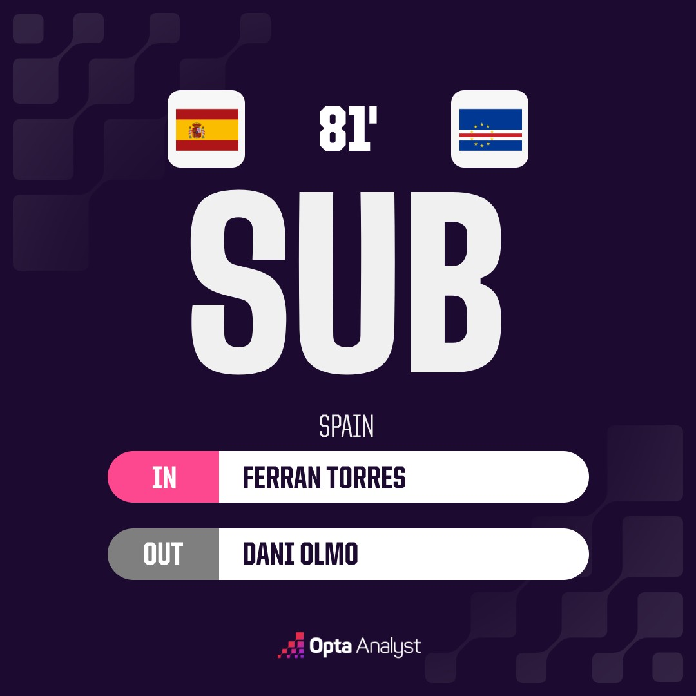
81'
Cabo Verde have not had a shot on target so far in this game.
79'
The Cabo Verde manager is looking to the substitutes’ bench, bringing on Telmo Arcanjo in place of Jamiro Monteiro. Will the change make a difference? Let’s find out!
79'
Can Cabo Verde survive here? They will have some defending to do after the ball is turned behind for a corner kick. Will Spain take this opportunity and grab the goal they have been pushing for?
78'
Shot blocked! Pedri unleashes an attempt at goal, but the ball does not reach its target thanks to Diney Borges, who makes a solid block to stem the danger – for now.
76'
Spain have had plenty of the ball in the last 15 minutes, with 87.82% possession compared to just 12.18% for their opponents. However, there’s not been any goal to come from that possessional dominance just yet.
76'
With 15 minutes of normal time remaining, it is Spain who have had more of the ball, with 73.28% compared to Cabo Verde’s 26.72%.
76'
The Cabo Verde manager is looking to the substitutes’ bench, bringing on João Paulo in place of Sidny Cabral. Will the change make a difference? Let’s find out!
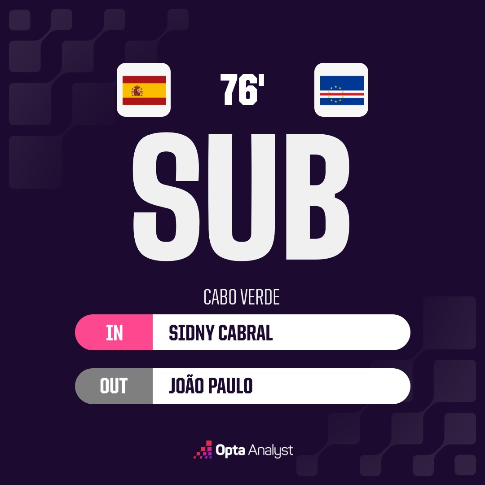
75'
Free-kick! A foul from Mikel Merino on Kevin Pina. It is well away from Spain’s goal, so it is unlikely to result in a chance for Cabo Verde.
75'
Great block from Diney Borges, as they get in the way of an attempt from Ferran Torres that might have been set to cause the goalkeeper some problems. Solid defending from the Cabo Verde player.
73'
CLOSE! Mikel Merino gets into a decent shooting position inside the Cabo Verde area, and manages to find space to get an effort off. However, Vozinha is equal to it.
73'
Spain are having plenty of the ball, with 84.67% possession in the last 15 minutes. However, they have been unable to transfer that possessional dominance into a goal during that spell, and are not even generating shooting opportunities, so Cabo Verde may not be unduly alarmed.
71'
Spain are making a tactical change. Gavi is leaving the field and in their place comes Lamine Yamal – we will soon see if this switch has the desired impact.
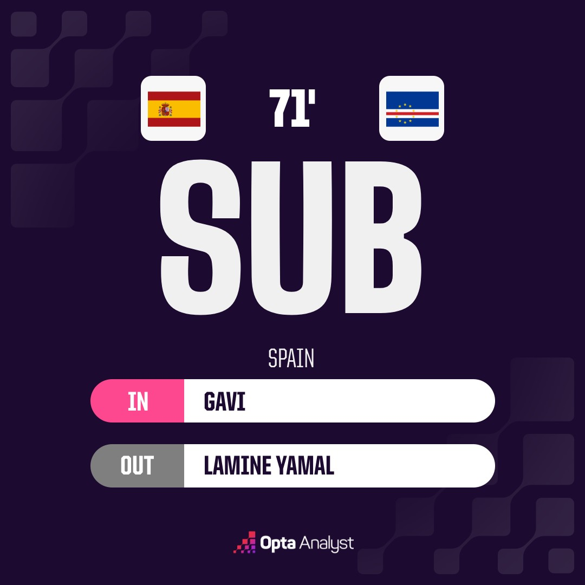
71'
Spain are making a tactical change. Fabián Ruiz is leaving the field and in their place comes Mikel Merino – we will soon see if this switch has the desired impact.
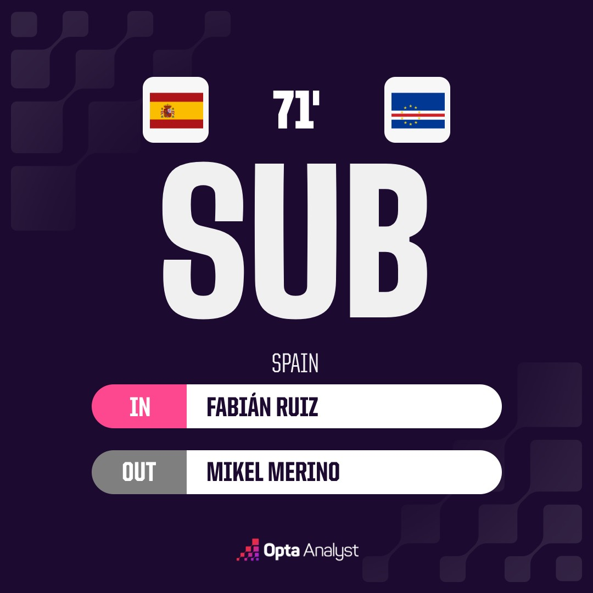
68'
Free-kick! A foul from Rodri on Vozinha. It is well away from Spain’s goal, so it is unlikely to result in a chance for Cabo Verde.
68'
No goalmouth action for some time now, with neither team having had a shot in the past 10 minutes. Will there be a moment that changes things soon? Spain have seen plenty of the ball, however, with 84 per cent of the possession in their favour during that period.
68'
Corner! The ball goes behind and now Spain will aim to deliver a good ball into the penalty area and test that Cabo Verde defence, which has been frustrating them in recent minutes.
68'
It has been 30 minutes since Cabo Verde last attempted a shot in this game.
66'
With 25 minutes left to play, it’s a good chance to check in on the shot count. Cabo Verde have mustered 3 so far, with 0 of those landing on target. On the other hand, Spain have gotten 18 of their 5 of attempts on target.
61'
A substitution for Cabo Verde sees Dailon Livramento replaced by Nuno da Costa. There does not appear to be any obvious sign of an injury, so that is a tactical switch.
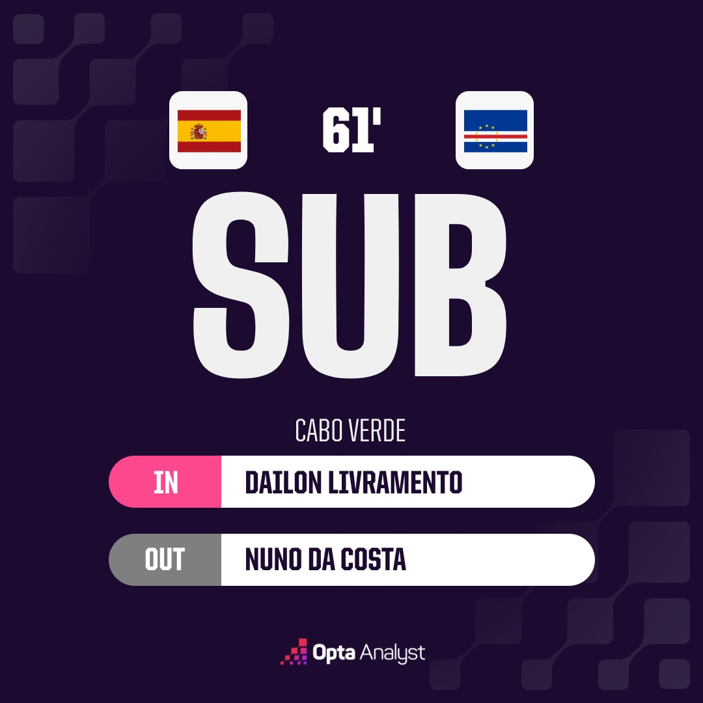
61'
A substitution for Cabo Verde sees Laros Duarte replaced by Deroy Duarte. There does not appear to be any obvious sign of an injury, so that is a tactical switch.
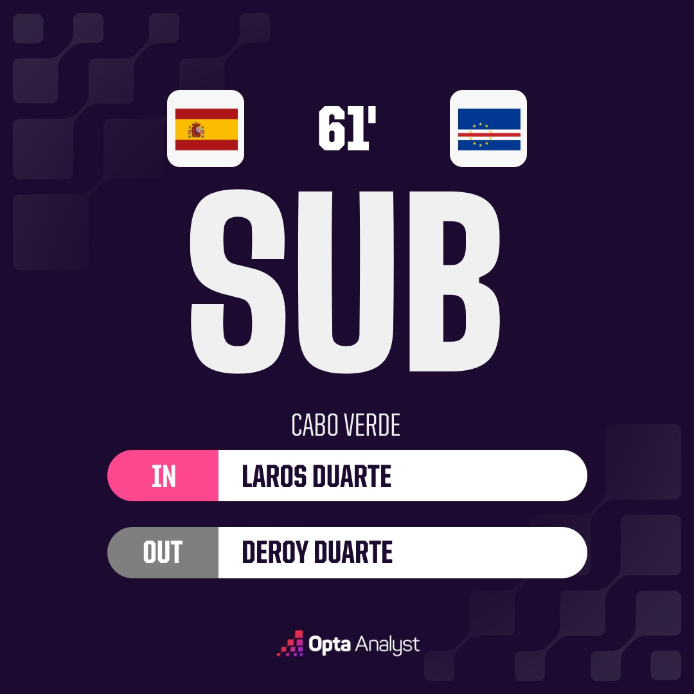
61'
An enforced substitution for Cabo Verde, as Jovane Cabral cannot carry on after sustaining an injury. Willy Semedo has hastily warmed up and now made their way onto the pitch in Jovane Cabral's place.
61'
Spain are having plenty of the ball, with 71.63% possession in the last 15 minutes. However, they have been unable to transfer that possessional dominance into a goal during that period.
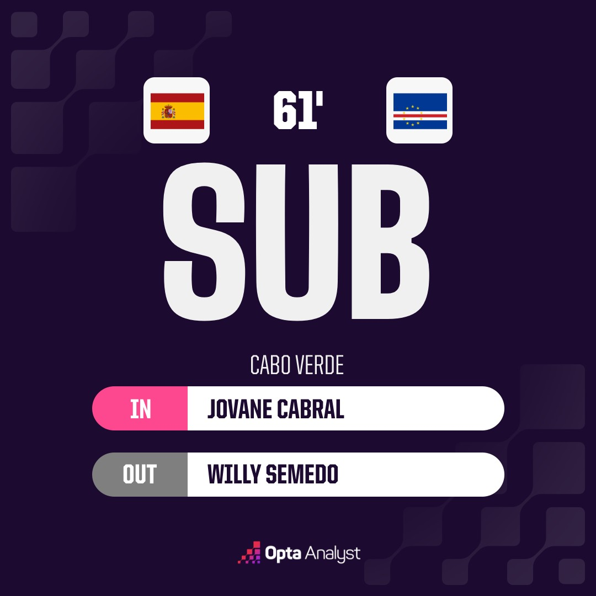
58'
Spain have attempted the last 13 shots in this game, Cabo Verde last shot was taken by Jovane Cabral in the 38th minute.
58'
No luck! Aymeric Laporte takes on a shot that, had they got it right, might have been set to test the goalkeeper, but instead it is sent off target and Cabo Verde come away unscathed.
56'
Vozinha has made 5 saves, his highest total in a single match in the FIFA World Cup.
56'
MISS! How has that not gone in? A complete lack of composure shown from Fabián Ruiz, who squanders a golden chance for Spain, whose coach looks on frustrated from the touchline. A real let off for Cabo Verde!
56'
Pedri has created 5 chances, his highest total in a single match in the FIFA World Cup.
52'
A foul from Gavi on Ryan Mendes sees Cabo Verde win a free-kick, but it is not in a dangerous position, so Spain should be confident they can defend it easily enough.
51'
MISS! A shot from Fabián Ruiz ends up being off target. They might have done a bit better with that one, but it remains Spain 0-0 Cabo Verde.
48'
MISS! A shot from Fabián Ruiz ends up being off target. They might have done a bit better with that one, but it remains Spain 0-0 Cabo Verde.
48'
MISS! A shot from Mikel Oyarzabal ends up being off target. They might have done a bit better with that one, but it remains Spain 0-0 Cabo Verde.
47'
More of the same from Spain since the restart. Another patient passing sequence as they probe for openings, the rhythm already clicking again after the break.
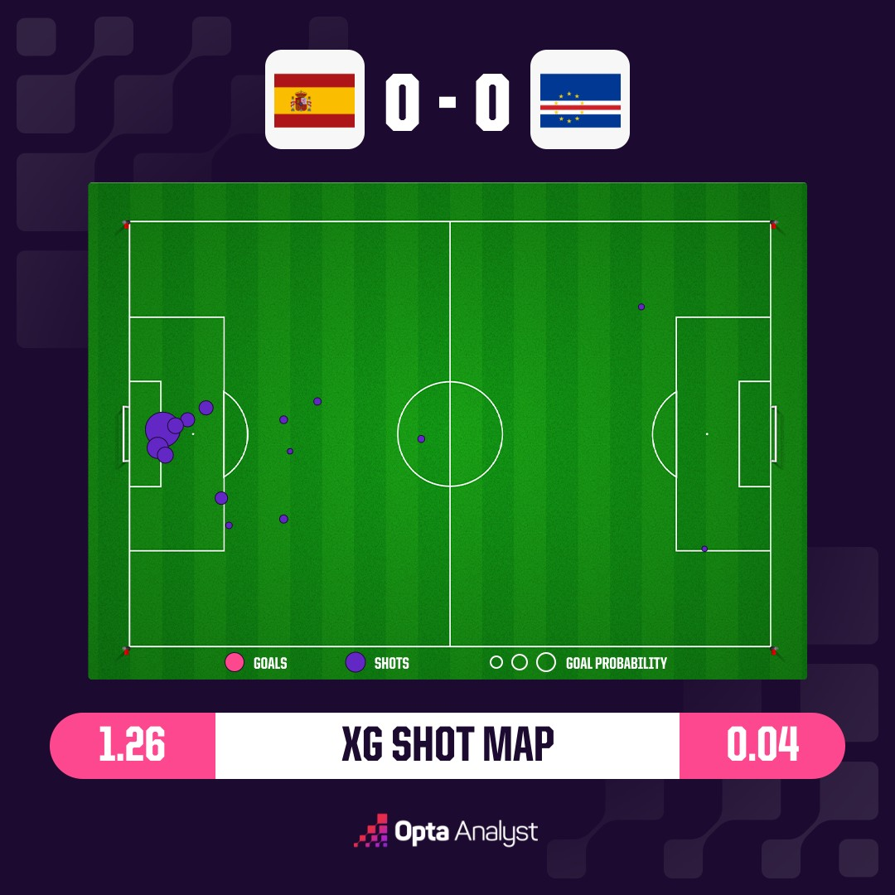
45+5'
Half-time! We reach the interval with the score level at 0-0 between Spain and Cabo Verde. Will we see a winner in the second half?
45+4'
A chance goes begging as Mikel Oyarzabal gets off a shot that does not hit the target. They might have done better with that one, but instead it is a goal-kick to Cabo Verde.
45+3'
BLOCK! An intervention from Pico Lopes might have just prevented a goal, with the defending player getting in the way of an attempt from Rodri. Solid defending there!
45+2'
Spain win a corner after Aymeric Laporte sees a shot diverted wide by Vozinha. Can Spain make this opportunity count, or will Cabo Verde defend this?
45+2'
It is a corner now to Spain, with Cabo Verde somewhat hanging on here as they look to hold out for a positive result. Can Spain make something of this set-piece opportunity?
45+1'
In the last 15 minutes, it is Spain who have dominated the ball, having seen 76.37% of the possession, yet they have not been able to go and turn that into a goal just yet, with their opponents standing firm.
45+1'
Chance! A shot from inside the area from Ferran Torres was heading in, but Vozinha makes a fine stop to keep it out. A big save from the Cabo Verde shot-stopper!
43'
Pedri makes a run in behind but the Cabo Verde defensive line were alert, and stepped up in time to catch them offside. That run just needed to be timed better.
41'
MISS! The score remains 0-0, with Cabo Verde relieved after Spain’s Fabián Ruiz goes for goal but sends their attempt off target. Not one to write home about, that one.
41'
Cabo Verde have not had a shot on target so far in this game.
40'
Great block from Diney Borges, as they get in the way of an attempt from Ferran Torres that might have been set to cause the goalkeeper some problems. Solid defending from the Cabo Verde player.
39'
CORNER! The pressure is building for Spain as they win a set-piece after Mikel Oyarzabal's attempt is blocked by Vozinha and diverted out of play.
39'
MISSED! That is really poor from Ferran Torres, who fails to convert from a golden opportunity, with the goal gaping. Will Spain pay for their profligacy, or can they put that miss behind them?
38'
That is a disappointing effort from Jovane Cabral, who went for glory but got their attempt wrong, and the shot sailed off target. A frustrating moment for Cabo Verde.
37'
Free-kick! A foul from Marcos Llorente on Dailon Livramento. It is well away from Spain’s goal, so it is unlikely to result in a chance for Cabo Verde.
36'
That’s offside! A switched-on defensive line from Cabo Verde, as they step up at the right time to catch Marc Cucurella offside, and the assistant referee’s flag is up.
35'
A chance goes begging as Dailon Livramento gets off a shot that does not hit the target. They might have done better with that one, but instead it is a goal-kick to Spain.
35'
Free-kick! A foul from Ferran Torres on Sidny Cabral. It is well away from Spain’s goal, so it is unlikely to result in a chance for Cabo Verde.
34'
A foul from Ferran Torres on Sidny Cabral sees Cabo Verde win a free-kick, but it is not in a dangerous position, so Spain should be confident they can defend it easily enough.
33'
The Spain defence steps up in time and there is a frustration for Ryan Mendes, who thought they were through until the flag goes up to signal offside.
31'
Plenty of the ball in the last quarter-of-an-hour of this match for Spain, but still Cabo Verde stand firm, despite having had only 33.13% of the ball in that period. Can Spain make their possessional dominance count?
29'
No luck! Marc Cucurella takes on a shot that, had they got it right, might have been set to test the goalkeeper, but instead it is sent off target and Cabo Verde come away unscathed.
29'
That might have been going in! A fantastic block from Pico Lopes, who gets in the way of a goal-bound effort from Gavi. Would the goalkeeper have been beaten? We will never know.
27'
Great block from Marc Cucurella, as they get in the way of an attempt from Steven Moreira that might have been set to cause the goalkeeper some problems. Solid defending from the Spain player.
22'
That’s offside! A switched-on defensive line from Spain, as they step up at the right time to catch Ryan Mendes offside, and the assistant referee’s flag is up.
20'
The Spain defence steps up in time and there is a frustration for Dailon Livramento, who thought they were through until the flag goes up to signal offside.
19'
A chance goes begging as Fabián Ruiz gets off a shot that does not hit the target. They might have done better with that one, but instead it is a goal-kick to Cabo Verde.
16'
The referee goes to their pocket and pulls out a yellow card, which is brandished in the direction of Sidny Cabral. Will they be able to avoid a second booking?
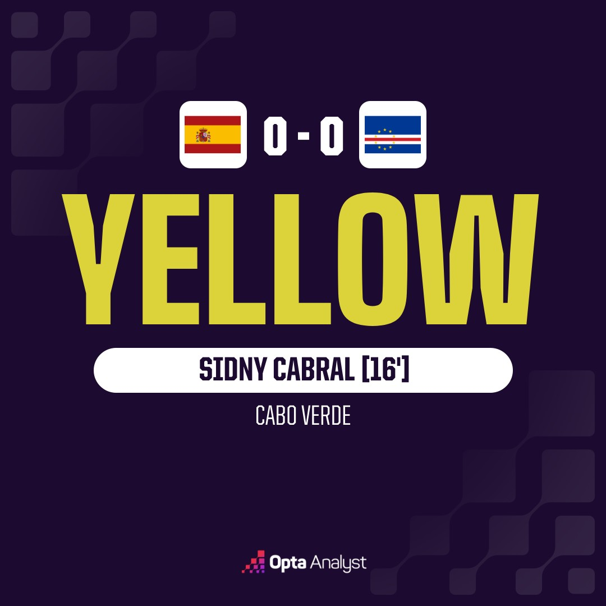
16'
A rash challenge from Sidny Cabral, who sends Marcos Llorente tumbling, giving Spain a free-kick. It is not in a threatening position, but it gives them a chance to get back on the ball.
16'
Plenty of the ball in the last quarter-of-an-hour of this match for Spain, but still Cabo Verde stand firm, despite having had only 32.55% of the ball in that period. Can Spain make their possessional dominance count?
15'
Vozinha is called into action to keep out a shot from outside the box by Pedri. The effort from the Spain player was on target, but Cabo Verde shot-stopper got to it.
11'
This game is certainly in a bit of a lull now, with neither team having had an attempt at goal in the past 10 minutes. It could do with something to spark it into life. Spain have had more possession during the quiet spell, but are yet to do much with it.
8'
It’s been tight so far, and Spain are making sure it stays that way with strong defensive discipline and well-timed clearances.
4'
VAR changes the decision! After a check, the video official believes the referee’s original call was wrong, and so the decision is overturned.
4'
This decision may not stand, as it is going to VAR. The referee has stopped the play while his video assistant reviews the incident.
2'
Free-kick! A foul from Marc Cucurella on Ryan Mendes. It is well away from Spain’s goal, so it is unlikely to result in a chance for Cabo Verde.
2'
Spain enjoying a strong spell early on - their passing rhythm is already clicking as they try to set the tone.
1'
KICK-OFF! And here we go! We are up and running in this clash between Cabo Verde and Spain at Atlanta Stadium. Stay tuned for all the action as it happens!
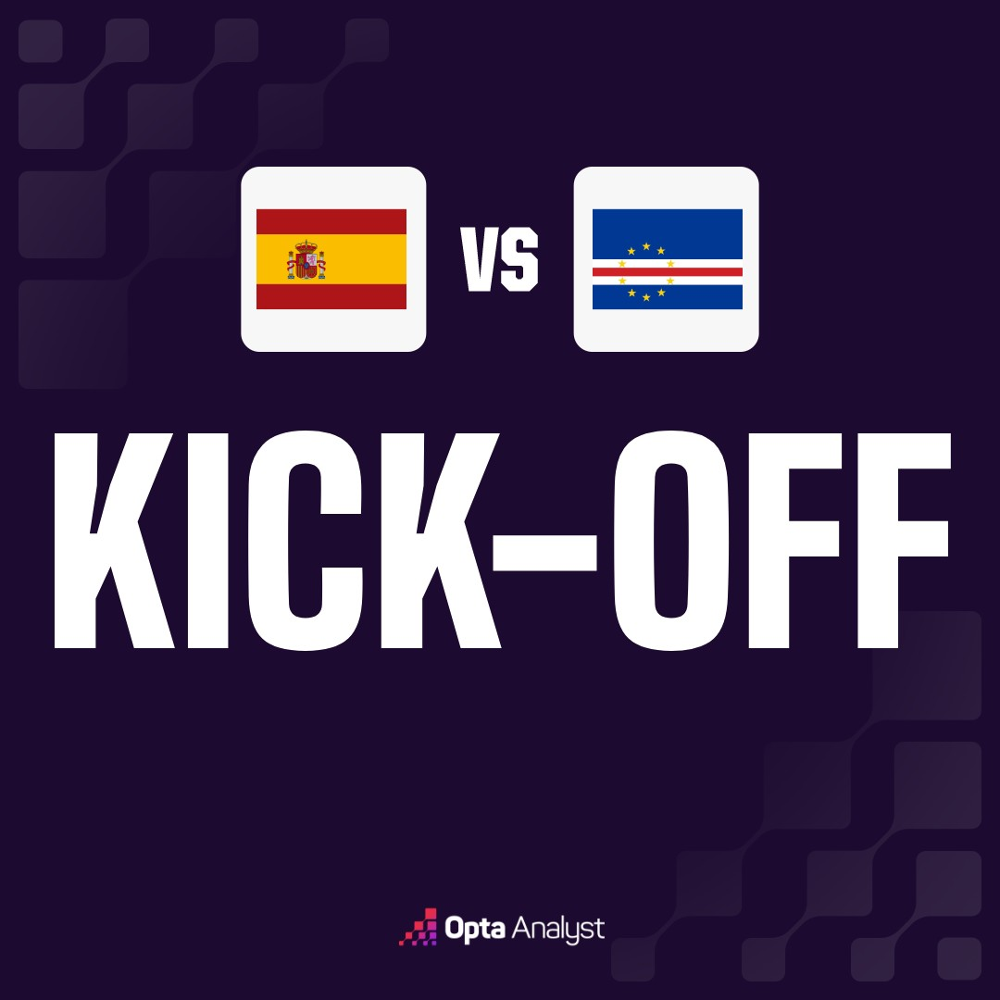
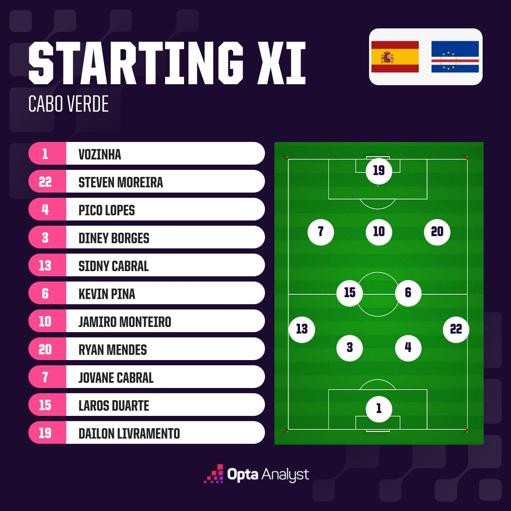
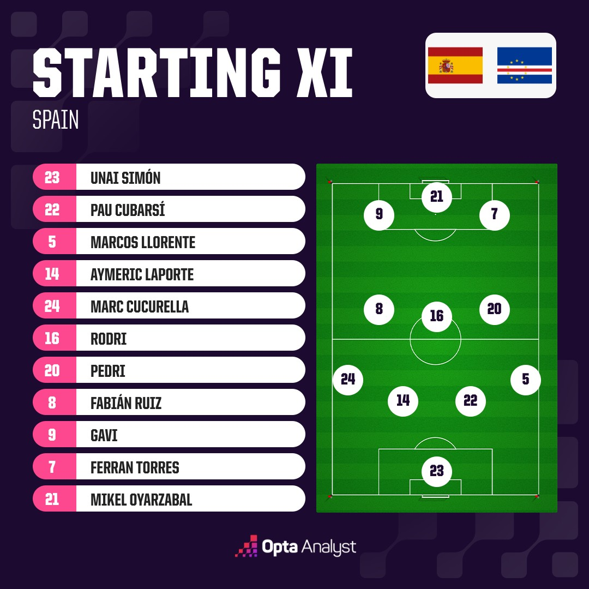
Cabo Verde take on Spain in the FIFA World Cup group stage at Atlanta Stadium on Monday with both teams in the midst of successful streaks, as Cabo Verde are seeking their fourth straight victory while Spain are unbeaten in their last 10.
It's the first match of the competition for both sides. Spain's last match saw them triumph 3-1 over Peru in a friendly at Estadio Cuauhtémoc on June 8. Mikel Oyarzabal and Pedri were on the scoresheet in the win.
Cabo Verde won their last game on June 6, beating Bermuda 3-0 in a friendly at Pratt & Whitney Stadium at Rentschler Field, their third straight victory. In 2026, they have won three and lost one.
Oyarzabal has caught the eye this year for Spain. He is the side's top scorer with three goals, two of which have been the crucial first of the match. Cabo Verde have been led by six players who have each netted once in 2026.
In their last six matches in all competitions, Spain have won three and drawn three. The Spanish side scored 13 and conceded four in that stretch, scoring first in five of the six contests. A majority of their goals (nine) came in the first half, while their opponents netted two times in the first 45 minutes. The Cabo Verde side have won three and lost three in their last six. The Cabo Verde side scored 10 and conceded six over that period, netting first in three of the six. They had five goals in the first half, while their opponents netted two times before the break.
-
General
Possession 74.3% 74.27325.72725.7% Possession lost in defensive half 0 06969 Possession lost in middle third 26 263636 Duels 79 798080 Duels success rate 50.6% 50.63348.7548.8% Aerial duels 28 282828 Aerial duels won 67.9% 67.85732.14332.1% Successful dribbles 7 744 Fouls won 1 11010 Offsides 2 233 Corner awarded 11 1111 -
Distribution
Passes 800 800278278 Long passes 30 305656 Long passes proportion (%) 3.8% 3.7520.14420.1% Passing accuracy 91.8% 91.7573.74173.7% Passes in opponents' half 668 6686767 Passing accuracy in opponents' half (%) 90.7% 90.71943.28443.3% Total passes in the final third 443 4433535 Passing accuracy in final third (%) 87.6% 87.58545.71445.7% Forward passes 475 475174174 Forward passes (%) 59.4% 59.37562.5962.6% Through balls 4 411 Final third entries 84 842626 Penalty area entries 63 6399 Total open play crosses 27 2733 Crosses 36 3644 Crossing accuracy 16.7% 16.6672525.0% -
Attack
Goals 0 000 Shots 27 2766 Shots on target 7 711 Blocked shots 8 822 Headed shots 9 911 Shots outside the box 11 1144 Shots inside the box 16 1622 Shots accuracy excluding blocked shots 36.8% 36.8422525.0% Shooting accuracy 25.9% 25.92616.66716.7% Key Passes 19 1944 -
Defence
Tackles 13 131818 Tackles success rate 92.3% 92.30861.11161.1% Clearances 7 74646 Interceptions 6 61515 Recoveries 55 554949 Attacking third recovery 10 1000 Defensive third recovery 19 194343 Midfield third recovery 26 2666 Recoveries in attacking half (%) 18.2% 18.18200.0% -
Discipline
Fouls conceded 10 1011 Yellow cards 1 111 Red cards 0 000